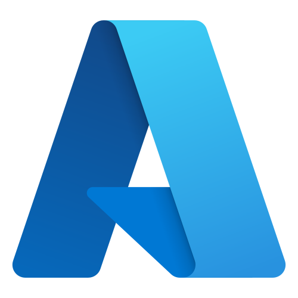

Custom Software
Enterprise-grade applications engineered for scale, security, and long-term maintainability.
From Agentic AI and cloud-native platforms to precision engineering — MKS Vision delivers end-to-end services that accelerate your business performance.
A full suite of software development services — custom web and mobile applications, data analytics platforms, e-commerce solutions, and QA automation — powered by a global talent pool and proven agile delivery frameworks.
Enterprise-grade applications engineered for scale, security, and long-term maintainability.
Native and cross-platform apps built for performance-critical user experiences.
Turn raw data into decisions with real-time dashboards and predictive analytics pipelines.
Automated regression, integration, and end-to-end coverage using Selenium, Cypress, and Jest.
High-converting storefronts on Magento and Shopify, built for speed and checkout conversion.
Research-driven interfaces that reduce friction and lift task completion rates.
EC2, Lambda, S3, RDS, EKS, SageMaker, Bedrock — full-stack AWS architecture and management

App Service, AKS, Azure AI, Cosmos DB, Azure DevOps — enterprise-grade Azure solutions
GKE, BigQuery, Vertex AI, Cloud Run — data-intensive and AI-heavy workloads on GCP
Docker, Kubernetes, Helm — container orchestration for scalable, portable deployments
Terraform, Pulumi, CloudFormation — repeatable, version-controlled infrastructure provisioning
Cost visibility, rightsizing, reserved capacity planning, and cloud spend governance
Deploy scalable, secure, and cost-efficient architectures across top global cloud platforms with version-controlled modern tooling.
Systematic infrastructure assessment, secure database migration, and re-platform pathways for critical legacy services.
Highly modular microservices, auto-scaling serverless APIs, and resilient load-balanced networks.
Automated pipelines powered by GitHub Actions, secure Terraform orchestration, and automated unit checks.
Strict Identity and Access Management (IAM), comprehensive transit encryption, and real-time auditable security logs.
“We don’t just migrate we modernise. Every engagement pairs infrastructure migration with security hardening and cost governance from day one.”
Streamline operations and eliminate operational bottlenecks. We have designed, deployed, and managed over 100 automated enterprise pipelines, converting repetitive back-office routines into rapid autonomous workflows.
Inquiry categorization, auto-replies, CRM syncing, and ticket routing.
Automated billing, reconciliation, expense processing, and invoice generation.
Inventory tracking, order dispatch automation, and partner telemetry syncing.
Employee onboarding workflows, document verification, and payroll syncing.
Ensure longevity and performance. We analyse, restructure, and transform legacy monolithic architectures into scalable, modular, and containerized microservice ecosystems ready for next-gen deployment.
Fostering an Agile culture, decentralized ownership, continuous delivery mindsets, and cross-functional technology alignment.
Decoupling legacy monoliths into cloud-native microservices, modernising data layers, and automating test coverage.
Transitioning to scalable SAFe delivery frameworks, establishing high-throughput CI/CD, and automating compliance auditing.
Continuous infrastructure monitoring, alert response, and system recovery round the clock.
Strict performance targets, guaranteed response times, and clear, transparent metrics.
Automated system patching, security vulnerability remediation, and continuous software updates.
Highly skilled engineers integrated natively into your workflows, working exclusively for you.
Regular system tuning, performance optimisation, and architectural reviews to prevent drift.
Automated offsite backups, recovery simulations, and resilient business continuity setups.
Ensure operational stability and high efficiency. MKS Vision provides end-to-end managed IT services designed to support, scale, and optimise your critical technology landscape.
We handle the daily complexities of infrastructure, applications, and security compliance so your core teams can focus on strategic innovation.
Comprehensive 24/7 server monitoring, cloud host tuning, network patches, and automated backup/recovery.
Regular proactive vulnerability scanning, live threat vector monitoring, firewall tuning, and IAM posture checks.
Dedicated L1/L2/L3 helpdesk support, incident tracking, bug resolutions, and automated software release management.
Real-time metric dashboards, unified log pipelines, monthly SLA performance audits, and resource cost tracking.
Certified teams across SAP, Oracle NetSuite and Microsoft Dynamics 365.
Workflows modelled on how your business actually runs, not forced into default templates.
Automated validation and reconciliation, so opening balances are right on day one.
Dashboards and financial reporting that give leadership one version of the truth.
Role-based training and adoption support that gets users productive quickly.
Controlled, module-by-module go-lives that reduce risk and protect operations.
Unify finance, supply chain and operations on one reliable platform. MKS Vision delivers end-to-end ERP implementation, from process design to go-live and beyond.
We handle the complexity of data migration, integration and change management, so your teams adopt the new system with minimal disruption to the business.
Process mapping, fit-gap analysis, platform selection and a phased rollout plan tied to business outcomes.
Finance, procurement, inventory, manufacturing and HR modules configured to your workflows.
Cleansed, validated legacy data, integrated with CRM, eCommerce, banking and reporting systems.
Hypercare, user training, performance tuning and continuous enhancements as you grow.
Turn customer data into revenue. MKS Vision designs, implements and optimises Salesforce and CRM platforms that give sales, service and marketing a single view of every customer.
We take care of configuration, integration and data quality, so your teams spend their time closing deals and serving customers, not updating records.
Sales Cloud, Service Cloud and Experience Cloud set up around your sales process and service model.
Custom objects, Flows, Apex and Lightning components that automate approvals, routing and follow-ups.
Connections to ERP, marketing, telephony and billing, plus de-duplication and data governance.
Org health checks, release management, admin support and continuous adoption improvements.
Accounts, interactions, orders and service history in one place.
Forecasting dashboards and real-time pipeline reporting for sales leadership.
Lead routing, approvals and alerts that remove manual hand-offs.
Lead scoring and next-best-action recommendations that sharpen conversion.
Structured, low-risk moves from spreadsheets or older CRM platforms.
Role-based enablement that makes the CRM part of everyday work.
Reusable, well-documented APIs that speed up every new project.
Docker and Kubernetes services that scale independently on demand.
Event streams that keep systems in step without batch delays.
OAuth, API gateways and encryption applied across every integration.
Distributed tracing, logging and monitoring across all services.
Adapters that bring mainframe and on-premise systems into modern workflows.
Connect every system into one coherent platform. MKS Vision builds API-first integration layers and event-driven microservices that let applications share data reliably and in real time.
We modernise monolithic applications step by step, without big-bang rewrites, so you gain agility and scale while the business keeps running.
REST and GraphQL APIs with gateways, versioning, security policies and developer documentation.
Kafka, RabbitMQ or cloud-native messaging for real-time, decoupled data flow.
Domain-driven decomposition and strangler-pattern migration of legacy apps onto containers.
Enterprise integration on MuleSoft, Azure Integration Services or AWS connecting ERP, CRM and third-party systems.
Connect physical operations with digital workflows. Our IoT division designs customised sensor integrations, visualizes telemetry streams, and implements predictive alert architectures.
We help industries transition from manual diagnostics to real-time, automated resource oversight, reducing operational risk across physical estates.
Secure sensor-to-cloud telemetry pipelines providing granular status analytics and real-time fault logging.
IoT-enabled automated pH, turbidity, and chemical tracking arrays designed specifically for retail F&B distribution chains.
Leveraging connected device usage analytics to build predictive, data-driven utility service models.
MKS Vision bridges the gap between academic research and commercial applications. By partnering with premium institutions like the Indian Institute of Technology (IIT) and other top-tier global universities, we co-develop frontier technologies.
Co-developing advanced physical engineering hardware, fluid dynamic models, and sensor arrays that require high mathematical rigor.
Partnering on frontier agentic AI research, next-gen transformer scaling architectures, and multi-modal computer vision model fine-tuning.
Active research consortiums spanning universities worldwide to transfer emerging science directly to enterprise operations.
Whether you need to scale engineering delivery with spec-driven agentic models, build custom computer vision edge pipelines, or migrate workloads to optimised multi-cloud layouts, we'd love to connect.